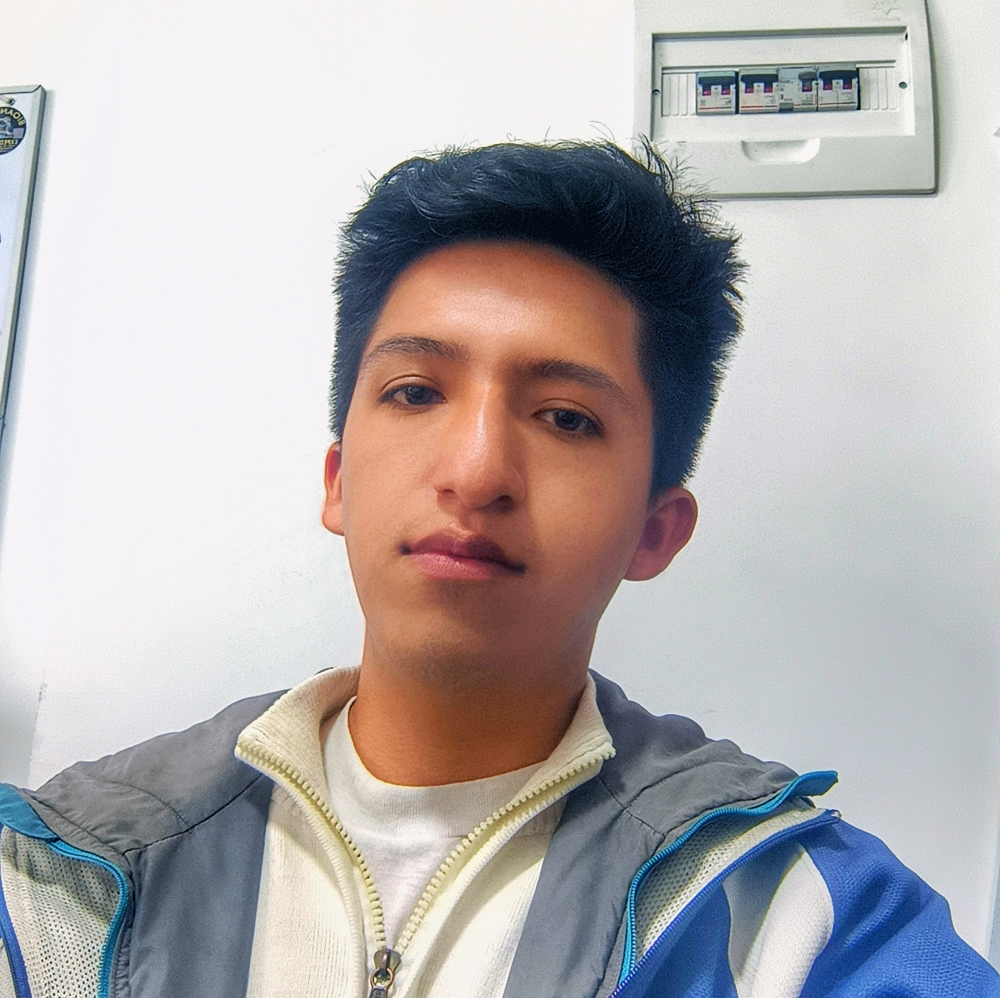

Sobre mí
Producción audiovisual con enfoque en resultados.
Soy Productor Audiovisual, Editor de Video y Content Creator con más de 2 años de experiencia en la creación de contenido para el sector turismo y plataformas digitales.
Mi trabajo abarca todo el proceso de producción: planificación, grabación, fotografía, edición, publicación y análisis del rendimiento del contenido. Me interesa crear piezas audiovisuales que no solo tengan una buena calidad visual, sino que también contribuyan al crecimiento de las marcas mediante resultados medibles.

Mi experiencia.
Destinos documentados
Machu Picchu
Valle Sagrado
City Tour Cusco
Ausangate
Laguna Humantay
Vinicunca
Camino Inca
Salkantay
Inti Raymi
Mi forma de trabajar.
1.
Planificación
Cada proyecto comienza con una planificación clara del contenido y los objetivos que se buscan alcanzar.
2.
Producción
Durante la producción me encargo de la grabación de video y fotografía, utilizando diferentes equipos según las necesidades del proyecto.
3.
Postproducción y análisis
En la postproducción realizo la edición del material, optimizando el contenido para cada plataforma y analizando después su rendimiento para identificar oportunidades de mejora.
Este enfoque me permite combinar creatividad con análisis, buscando que cada publicación tenga un propósito y genere resultados.
Mi experiencia profesional.
Un recorrido por los proyectos y marcas con los que he trabajado.
Machupicchu Terra
Creador de Contenido · CuscoResponsable único de la producción de contenido para YouTube, Facebook, Instagram y TikTok, desde la planificación hasta la publicación. Grabación en campo y fotografía en destinos turísticos (Machu Picchu, Valle Sagrado, Humantay, Vinicunca, Camino Inca, Salkantay e Inti Raymi) y edición en DaVinci Resolve y CapCut.
Bioandean Expeditions
Webmaster y Diseñador GráficoMantenimiento y optimización del sitio web corporativo, gestión de contenido y blog, implementación de formularios de reserva para campañas de Google Ads, diseño de material publicitario y mapas de tours, y desarrollo de brochures e invoices para el área comercial.
Inti Raymi — Fiesta del Sol
Filmación y producción (tres ediciones)Cobertura audiovisual del Inti Raymi, la festividad más importante de Cusco. Grabación de la representación histórica en Sacsayhuamán y edición de material promocional y documental.
Gestión de crecimiento orgánico
Estrategia de contenidoCrecimiento de la comunidad de Facebook y de Instagram de turismo a través de contenido orgánico diario, optimizado por rendimiento y métricas de alcance.
Formación académica.
Base técnica complementaria a la producción audiovisual.
Desarrollo de Sistemas de Información
Instituto Superior Privado KHIPU · TituladoIdiomas: Español (nativo) · Inglés (básico).
Resultados que respaldan mi trabajo.
Más allá de producir contenido, me enfoco en generar impacto.
- Administración de siete canales de YouTube especializados en turismo.
- Más de 1.6 millones de visualizaciones acumuladas en el canal principal durante mi gestión.
- Más de 1.8 millones de visualizaciones acumuladas en TikTok.
- Crecimiento de Facebook de aproximadamente 1,000 a más de 18,000 seguidores entre marzo y julio de 2026 mediante contenido orgánico.
- Crecimiento de Instagram de aproximadamente 200 a más de 2,000 seguidores en el mismo periodo.
- Producción de contenido diario para Facebook con publicaciones que habitualmente alcanzan entre 10,000 y 100,000 visualizaciones, incluyendo videos que superaron el millón de reproducciones.
Herramientas principales.
Producción Audiovisual
Producción en campo
Grabación de video
Fotografía
Storytelling visual
Edición
DaVinci Resolve
CapCut
Adobe Premiere Pro
After Effects
Diseño
Adobe Photoshop
Adobe Illustrator
Adobe Lightroom
Marketing Digital
SEO
Estrategia de contenido
Analítica de redes sociales
Optimización de plataformas
Desarrollo Web
WordPress
HTML
CSS
JavaScript
Python
Mi objetivo
Busco colaborar con empresas y organizaciones que necesiten crear contenido audiovisual de calidad para fortalecer su presencia digital.
Me interesa participar en proyectos donde pueda aportar tanto en la producción como en la estrategia del contenido, ayudando a transformar ideas en materiales que conecten con las personas y generen resultados.
Trabajemos juntos